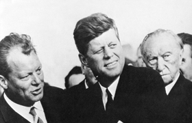

Lezione 20  La guerra fredda
La guerra fredda

Il 26 giugno 1963 il presidente degli Stati Uniti John Fitzgerald Kennedy visitò Berlino Ovest, circondata dal muro costruito dai sovietici. Qui pronunciò il discorso passato alla storia per la sua frase conclusiva: Ich bin ein Berliner (io sono un berlinese). Eccone un estratto.
C'è molta gente al mondo che realmente non comprende - o dice di non comprendere - quale sia il gran problema che divide il mondo libero dal mondo comunista. Vengano a Berlino. Ci sono taluni i quali dicono che il comunismo rappresenta l'ondata del futuro. Che vengano a Berlino. E ci sono alcuni che dicono, in Europa e altrove, che si potrebbe lavorare con i comunisti. E vengano anche questi a Berlino. E ci sono persino alcuni - pochi - i quali dicono che è vero, sì, il comunismo è un cattivo sistema, ma consente di realizzare il progresso economico. Lass sie nach Berlin kommen.
La libertà ha molte difficoltà, e la democrazia non è perfetta; ma noi non abbiamo mai dovuto erigere un muro per chiudervi dentro la nostra gente e impedirle di lasciarci.
Sebbene il muro rappresenti la più ovvia e lampante dimostrazione degli insuccessi del sistema comunista dinanzi agli occhi del mondo intero, non ne possiamo trarre soddisfazione. Esso rappresenta infatti, come ha detto il vostro sindaco, un'offesa non solo alla storia, ma un'offesa all'umanità,perché divide le famiglie, divide i mariti dalle mogli e i fratelli dalle
sorelle, e divide gli uni dagli altri i cittadini che vorrebbero vivere insieme.
Ciò che vale per questa città, vale per la Germania. Una pace veramente durevole in Europa non potrà essere assicurata fino a quando a un tedesco su quattro si negherà il diritto elementare di un uomo libero, e cioè quello della libera scelta.
La libertà è indivisibile. Quando un uomo è in schiavitù, nessun altro è libero.
Quando tutti saranno liberi, allora potremo guardare al giorno in cui questa città sarà riunita - e così questo paese e questo grande continente europeo - in un mondo pacifico e ricco di speranza.
Quando questo giorno infine verrà - e verrà - la popolazione di Berlino Ovest potrà avere motivo di misurata soddisfazione per il fatto di essersi trovata sulla linea del fronte per quasi due decenni. Tutti gli uomini liberi, ovunque si trovino, sono cittadini di Berlino. Come uomo libero, quindi, sono orgoglioso di dire: Ich bin ein Berliner.